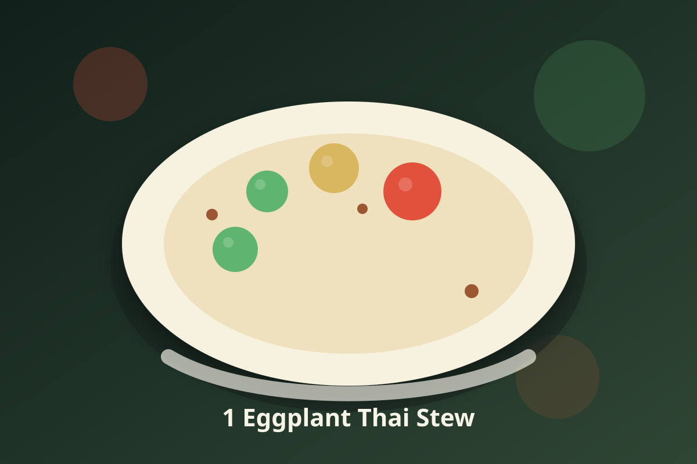

Thai · Vegan
1 Eggplant Thai Stew
A savory vegan Thai-inspired stew with layered aromatics and a bright finish.

Ingredients
- 1 eggplant
- 1 potatoes
- 1 red bell pepper
- 1/2 cup coconut milk
Instructions
- Sauté garlic, scallions, thyme, and allspice until fragrant.
- Add 1 eggplant, 1 potatoes, 1 red bell pepper, 1/2 cup coconut milk, and 1 cup water. Sauté until potatoes are fork-tender.
- Finish with fresh lime juice and herbs; adjust heat to taste.